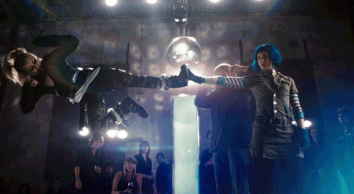
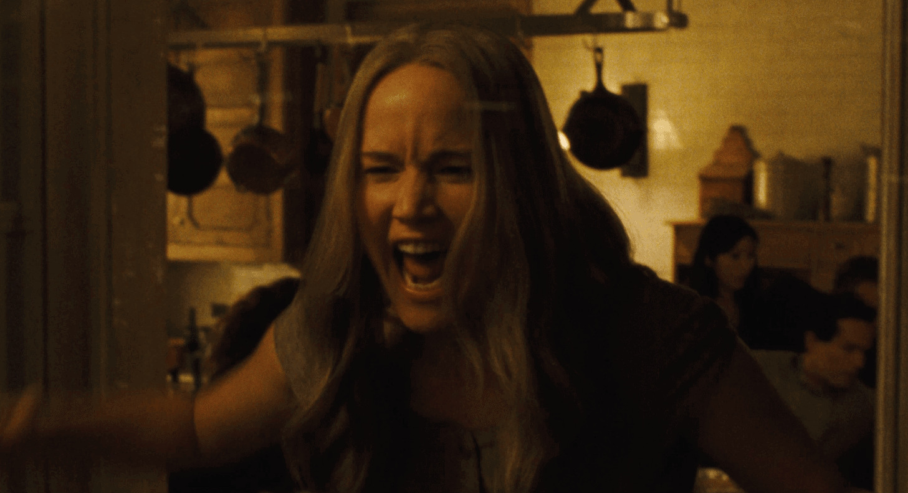

List of my favorite movies
Table of Contents
Hollywood movies
The Social Network (2010)
Mark Zuckerberg creates a social networking site, Facebook, with his friend Eduardo's help. Though it turns out to be a successful venture, he severs ties with several people along the way.
- Year: 2010
- Genre: Drama/History
- Rotten Tomatoes: 96%
- Torrent: The Social Network (2010) 1080p BrRip x264 - 1.2GB - YIFY
Figure 1: A hacking scene from the movie.
My thoughts
This movie changed my life. How? This is the point when I started learning html, basically it was my starting point into computers. I started learning web dev because I got inspired with this movie.
Figure 2: Jesse Eisenberg smiling (Scene from The Social Network)
Jesse Eisenberg is my favorite actor. I like all of his movies. He played Mark Zuckerberg role and he was brillant. I am not a fan of Mark Zuckerberg, but I fell in love with this movie character played by Jesse.
This movie is directed by David Fincher. I kinda like every movie directed by David Fincher, he turn even a simple scene into an Art.
Never Let Me Go (2010)
Kathy, Tommy and Ruth are raised in an idyllic environment at Hailsham, a boarding school. Even as they deal with pangs of love, a teacher lets it slip that their fate has already been written.
- Year: 2010
- Genre: Sci-fi/Romance
- Rotten Tomatoes: 71%
- Torrent: Never Let Me Go (2010) 1080p BrRip x264 - YIFY
Figure 3: A scene from the film.
My thoughts
I love this movie. It's based on a Kazuo Ishiguro's 2005 novel Never Let Me Go. It's really hard to put in words but all I can say is, for me this movie shows the value of your life. I love drama movies and this is one of the best I got.
Figure 4: Screenshot from the movie.
I strongly recommend you this movie. It will make you cry. I mean I hardly cry watching movies, but this was tough for me too. Andrew Garfield did really awesome acting. This movie is not a horror movie but it left a sense of fear inside you. But if you are into reading novels, then I will recommend reading novel.
Scott Pilgrim vs the World (2010)
Scott Pilgrim meets Ramona and instantly falls in love with her. But when he meets one of her exes at a band competition, he realises that he has to deal with all seven of her exes to woo her.
- Year: 2010
- Genre: Action/Romance/Comedy
- Rotten Tomatoes: 82%
- Torrent: Scott Pilgrim Vs The World 2010 1080p BluRay HEVC H265 BONE
Figure 5: Cute scene from the film.
My Thoughts
This movie is a pure Art. I love quick clever humor. This movie makes me laugh real hard. Movie goes very quick, So no point of getting bored.
Figure 6: I love all songs of this movie.
Figure 7: Every little joke is adorable.

Figure 8: Badass battle scenes by Ramona is satisfying to watch.
You can't find any movie similar to this. It's a very unique movie to watch.
Mother (2017)
A poet and his wife lead a tranquil existence in a burnt-out house. However, when uninvited guests come barging in, the couple's life turns chaotic and shocking events unfold.
- Year: 2017
- Genre: Horror/Thriller
- Rotten Tomatoes: 68%
- Torrent: Mother! (2017) [1080p] [YTS] [YIFY]
Figure 9: Movie poster + Scene combined.
My Thoughts
This movie will f**k you up completely. It's will confuse you. In start you might end up getting bored and in the last you might end up getting frustrated.
I have to say Jennifer Lawrence did brilliant acting, This is first time I love her role, 100 times better than The Hunger Games.
I want you remember some points before watching this movie.
This is a horror movie. It's not!- Finish the whole movie carefully, even if it makes no sense.
- Don't forget to watch mother! (2017) Ending Explained + Analysis after the movie.

Figure 10: A scene from the film.
I must say this movie is way too deep and clever written. I love the ending, all the drama and weirdness this movie holds. If you like crazy thrillers then give it a shot!
If I Stay (2014)
I like drama movies and if I stay is a full drama. I love this movie.
Figure 11: A scene from the movie.